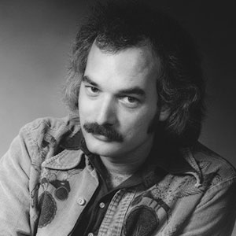

Bill Kreutzmann
Bill Kreutzmann played as the steady beating heart of the Grateful Dead’s rhythm section for forty years. While working at Dana Morgan’s Music Store he met Garcia, and formed the band, the Zodiacs, featuring Pigpen playing harmonica, and Garcia on bass. By 1965, the Zodiacs had become the Warlocks. And when the Warlocks went electric, they became the Grateful Dead.